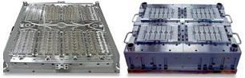

Molding/Plastic Encapsulation
Molding is the process of
encapsulating the device in plastic material.
Transfer molding is one of
the most widely used molding processes in the semiconductor industry
because of its capability to mold small parts with complex features. In
this process, the molding compound is first
preheated
prior to its
loading into the molding chamber.
After pre-heating, the molding
compound is forced by a hydraulic
plunger
into the pot where it reaches
melting
temperature and becomes fluid. The plunger then continues to force the
fluid molding compound into the
runners
of the mold
chase. These runners serve
as canals where the fluid molding compound travels until it reaches the
cavities, which contain the leadframes for encapsulation.
In
conventional flow chambers, the cavities are filled up in a
'christmas
tree'
fashion, i.e., cavities that are nearer the cull get filled up
first.
The
highest filling velocity is experienced by the
first cavity.
However, the filling velocity decreases as the first cavity is
filled.
Subsequent cavities are filled with increasing velocities
until the last cavity, which ends up with the second highest filling
velocity, next only to the first cavity. As such, the first and
last cavities are most prone to
wiresweeping
and
die paddle
shift.
|
Figure 1.
Examples of Mold Chases
|
|

Figure 2.
Examples of Molds
|